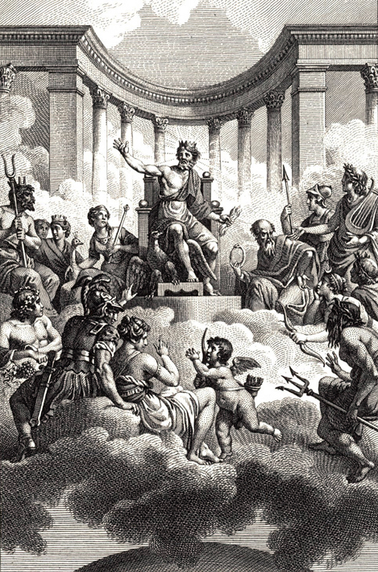

A mitologia grega não é apenas um conjunto de histórias antigas, é um retrato das emoções humanas levadas ao extremo.
Deuses que sentem inveja. Heróis que falham. Destinos que não podem ser evitados.

Muito antes da ciência explicar o mundo, os gregos criaram narrativas para responder perguntas profundas: Por que sofremos? O que acontece quando desafiamos o poder? Existe justiça no destino?
Nesse universo, figuras como Zeus governam o céu com autoridade absoluta, enquanto mortais enfrentam provas impossíveis não apenas contra monstros, mas contra si mesmos.
Cada mito carrega uma lição, um aviso ou uma reflexão. Alguns falam sobre orgulho, outros sobre amor, vingança ou sacrifício. E quase todos mostram uma verdade desconfortável: nem sempre fazer o certo garante um final feliz
Explore os mitos a seguir e descubra como essas histórias antigas ainda refletem o mundo de hoje.
- A Guerra de TroiaQuer saber mais sobre a mitologia grega? Clique aqui
Site Sobre Mitologia Grega Criado para Trabalho de Interfaces Web